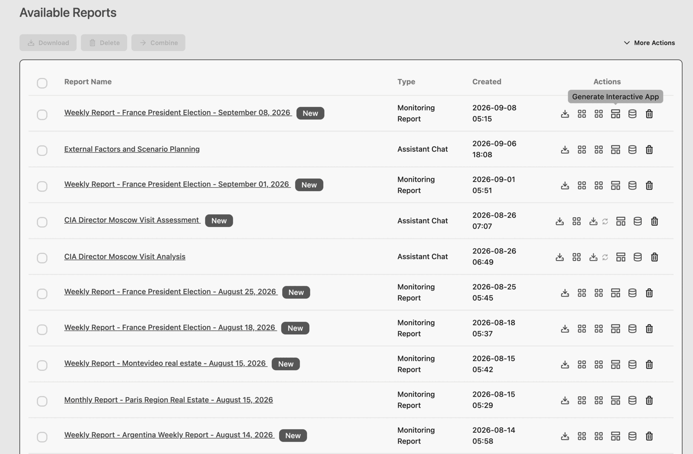

External intelligence platform · Access by request
The external world, made decision‑ready.
Mission Grey connects global and local change to the decisions your organization has to make: what matters, what may happen next, and what to do.

The business problem
Inside systems, outside change
Your business does not operate inside your systems.
Your ERP knows your orders, your CRM your customers, your financial systems your numbers. Many of the changes that move those numbers start outside them. Your internal operations are systematic. Your view of the outside world should be too.
OUTWhat can move those numbers next
World
A regulation A tariff An interest rate moveMarket
A political decision A technology shiftPlace
A supplier problem A market openingINWhat your systems already see
Organization
Decision
Why now
The cost is often not ignorance. It is delay.
Planning runs on a cycle. External change does not, and there is more of it than manual monitoring can cover. Seeing a development early is what leaves room to act on it.
Being ready
Don't be surprised by what it means for your business.
You cannot predict every event. You can understand the exposures, opportunities and actions before the impact reaches your business.
01Find the upside
See opportunities earlier.
02Adapt in time
Change strategy, pricing, sourcing or financing while there are still choices.
03Reduce the downside
Prepare for external risks before they become business results.
Why this exists
“Mission Grey is democratizing strategic intelligence and making it available globally, beyond the small circle of government or elite institutions.”
A former CIA officer
The system
Monitor · Analyze · Decide · Act
One pipeline, from world signal to your decision.
Monitor
What changed?
Analyze
What does it mean to us?
Decide
What could happen, and what should we do?
Act
Who needs to know, or act?
Intelligence that stays current.
Run standing watches, keep the history, see what changed, and return to the analysis when the decision moves.

The difference
Three inputs, one engine
Not one source. Not one model.
The advantage is not any one dataset, model or AI. It is how they are combined around the decision.
AData and context
BModels and methods
CHuman intelligence
Mission Grey decision engine
Decision‑worthy intelligence
Daily use
Ask · Monitor · Receive · Share · Act
External intelligence in the normal flow of work.
The sophistication sits underneath. The daily interaction is ordinary work.
Ask
Ask a question.
Monitor
Keep an issue running.
Receive
Get material changes.
Share
Work from common evidence.
Act
Know when a trigger is reached, and who owns the action.
Across the organization
What each function watches
One external intelligence layer. Different views for different responsibilities.
Shared Mission Grey intelligence layer
Evidence · Signals · Assumptions · Scenarios · Models · Indicators
Top management
Strategy and capital allocation
Sales
Demand, customers and competition
Operations
Suppliers, sites and delivery
Finance
Costs, rates and counterparties
Risk
Materiality, ownership and triggers
Strategy and investment
The assumptions under a commitment
The question each function arrives with is on Solutions.
The same intelligence layer, shaped around your business.
Your intelligence does not have to look like our platform. The data, models and evidence stay shared, and the view is built around the markets, assets and decisions that are yours.

Confidence
Evidence
Trust architecture
Not a black box. A system you can trust.
Signals can be traced to source, the evidence behind a conclusion can be opened and read, and customer‑private information can remain restricted to your environment. How that is built.
Human expertise, built into the intelligence process when the question requires it.
The Mission Grey Guild, a curated network of domain and regional experts, contributes through expert review, surveys and Delphi rounds.
Part of the method, not a comment on the output.
28 members
“We use multiple tools to track developments, but only Mission Grey combines them into a coherent view: real scenarios, full context, and actionable recommendations.”
Head of Market Foresight · Export Agency
Access
Bring us one decision.
A market move. An investment. A supplier exposure. A regulatory change. A strategic assumption you are no longer sure about. We will show what Mission Grey does with it. Mission Grey is an enterprise platform; access is by request.
Request accessFor organizations ready to start working with Mission Grey.
See it on your decisionA short working session using a real question, exposure or opportunity from your organization.